There are a total of 150 unique jokers in Balatro. Each joker does something different and all
help you in some way. Jokers are the life and soul of Balatro, making up and making Balatro what it is.
Jokers are the most common thing you can find in the shop and are found in Buffoon packs or in packs given
by the Buffoon skip tag. The Rare and Uncommon skip tags guarantee a joker of that rarity in the shop.
There are also legendary jokers that are only found by obtaining The Soul which is rarely found in Arcana
packs and Spectral packs. Here are the jokers sorted by rarity:
Common Jokers (61)
Joker:
Base joker. Gives base of +4 Mult.
Greedy Joker:
Played cards with Diamond suit give +3 Mult when scored.
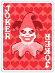
Lusty Joker:
Played cards with Heart suit give +3 Mult when scored.
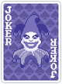
Wrathful Joker:
Played cards with Spade suit give +3 Mult when scored.
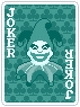
Gluttonous Joker:
Played cards with Club suit give +3 Mult when scored.
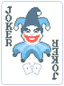
Jolly Joker: +8 Mult if played hand contains a Pair.
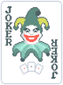
Zany Joker: +12 Mult if played hand contains a Three of a Kind.
Mad Joker: +10 Mult if played hand contains a Two Pair.
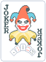
Crazy Joker: +12 Mult if played hand contains a Straight.
Droll Joker: +10 Mult if played hand contains a Flush.
Sly Joker: +50 Chips Chips if played hand contains a Pair.
Wily Joker: +100 Chips if played hand contains a Three of a Kind.
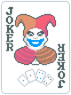
Clever Joker: +80 Chips if played hand contains a Two Pair.
Devious Joker: +100 Chips if played hand contains a Straight.
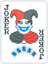
Crafty Joker: +80 Chips if played hand contains a Flush.
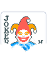
Half Joker: +20 Mult if played hand contains 3 or fewer cards.
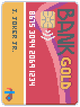
Credit Card:
Go up to -$20 in debt.
Banner: +30 Chips for each remaining discard.
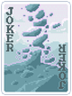
Mystic Summit: +15 Mult when 0 discards remaining.
8 Ball:
1/4 chance for each played 8 to create a Tarot card when scored (Must have room).
Misprint:
Randomly gives +0-23 Mult.
Raised Fist:
Adds double the rank of lowest ranked card held in hand to Mult.
Chaos the Clown:
1 free Reroll per shop.
Scary Face:
Played face cards give +30 Chips when scored.
Abstract Joker: +3 Mult for each Joker card in joker slots.
Delayed Gratification:
Earn $2 per discard if no discards are used by end of the round.
Gros Michel: +15 Mult. 1/6 chance this is destroyed at the end of round.
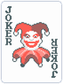
Even Steven:
Played cards with even rank give +4 Mult when scored.
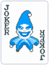
Odd Todd:
Played cards with odd rank give +31 Chips when scored.
Scholar:
Played Aces give +20 Chips and +4 Mult when scored.
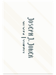
Business Card:
Played face cards have a 1/2 chance to give $2 when scored.
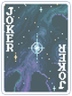
Supernova:
Adds the number of times poker hand has been played this run to Mult.
Ride the Bus:
This Joker gains +1 Mult per consecutive hand played without a scoring face card.
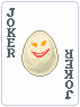
Egg:
Gains $3 of sell value at end of round.
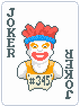
Runner:
Gains +15 Chips if played hand contains a Straight.
Ice Cream: +100 Chips and -5 Chips for every hand played.
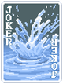
Splash:
Every played card counts in scoring.
Blue Joker: +2 Chips for each remaining card in deck.
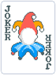
Faceless Joker:
Earn $5 if 3 or more face cards are discarded at the same time.
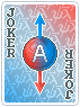
Superposition:
Create a Tarot card if poker hand contains an Ace and a Straight.
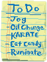
To Do List:
Earn $4 if poker hand is a randomly picked poker hand. Poker hand changes at the end of round.
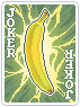
Cavendish: x3 Mult. 1/1000 chance this card is destroyed at the end of round.
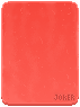
Red Card:
This Joker gains +3 Mult when any Booster Pack is skipped.
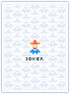
Riff-Raff:
When Blind is selected, create 2 Common Jokers.
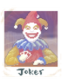
Photograph:
First played face card gives x2 Mult when scored.
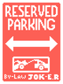
Reserved Parking:
Each face card held in hand has a 1/2 chance to give $1.
Mail-In Rebate:
Earn $5 for each discarded rank chosen at random. Rank changes every round.
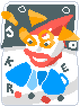
Hallucination:
1/2 chance to create a Tarot card when any Booster Pack is opened.
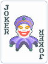
Fortune Teller: +1 Mult per Tarot card used this run.
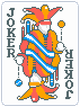
Juggler:
+1 hand size.
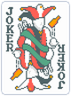
Drunkard:
+1 discard each round.
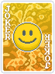
Smiley Face:
Played face cards give +5 Mult when scored.
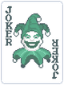
Green Joker: +1 Mult per hand played -1 Mult per discard.
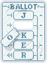
Hanging Chad:
Retrigger first played card used in scoring 2 additional times.
Walkie Talkie:
Each played 10 or 4 gives +10 Chips and +4 Mult when scored.
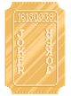
Golden Ticket:
Played Gold cards earn $4 when scored.
Popcorn: +20 Mult and -4 Mult per round played.
Square Joker:
This Joker gains +4 Chips if played hand has exactly 4 cards.
Swashbuckler:
Adds the sell value of all other owned Jokers to Mult.
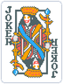
Shoot the Moon:
Each Queen held in hand gives +13 Mult.
Golden Joker:
Earn $4 at end of round.
Uncommon Jokers (64)
Joker Stencil: x1 Mult for each empty Joker slot. (Joker Stencil included.)
Four Fingers:
All Flushes and Straights can be made with 4 cards.
Mime:
Retrigger all card held in hand abilities.
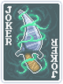
Ceremonial Dagger:
When Blind is selected, destroy Joker to the right and permanently add double its sell value to this Mult.
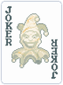
Marble Joker:
Adds one Stone card to the deck when Blind is selected.
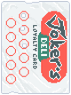
Loyalty Card: x4 Mult every 6 hands played.
Dusk:
Retrigger all played cards in final hand of the round.
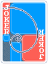
Fibonacci:
Each played Ace, 2, 3, 5, or 8 gives +8 Mult when scored.
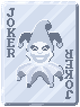
Steel Joker:
Gives x0.2 Mult for each Steel Card in your full deck.
Hack:
Retrigger each played 2, 3, 4, and 5.
Pareidolia:
All cards are considered face cards.
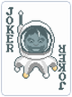
Space Joker:
1/4 chance to upgrade level of played poker hand.
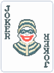
Burglar:
When Blind is selected, gain +3 Hands and lose all discards.
Blackboard: x3 Mult if all cards held in hand are Spades or Clubs.
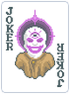
Sixth Sense:
If first hand of round is a single 6, destroy it and create a Spectral card.
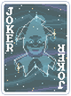
Constellation:
This Joker gains x0.1 Mult Mult every time a Planet card is used.
Hiker:
Every played card permanently gains +5 Chips when scored.
Card Sharp: x3 Mult Mult if played poker hand has already been played this round.
Madness:
When Small Blind or Big Blind is selected, gain x0.5 Mult and destroy a random Joker.
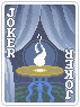
Séance:
If poker hand is a Straight Flush, create a random Spectral card. (Must have room.)
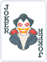
Vampire:
This Joker gains x0.1 Mult per scoring Enhanced card played, removes card Enhancement.
Shortcut:
Allows Straights to be made with gaps of 1 rank (ex: 10 8 6 5 3 would count.)
Hologram:
This Joker gains x0.25 Mult every time a playing card is added to your deck.
Cloud 9:
Earn $1 for each 9 in your full deck at end of round.
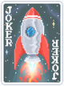
Rocket:
Earn $1 at end of round. Payout increases by $2 when Boss Blind is defeated.
Midas Mask:
All played face cards become Gold cards when scored.
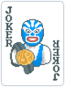
Luchador:
Sell this card to disable the current Boss Blind.
Gift Card:
Add $1 of sell value to every Joker and Consumable card at end of round.
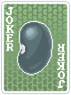
Turtle Bean:
+5 hand size, reduces by 1 each round.
Erosion: +4 Mult for each card below (the deck's starting size) in your full deck.
To the Moon:
Earn an extra $1 of interest for every $5 you have at end of round.
Stone Joker:
Gives +25 Chips for each Stone Card in your full deck.
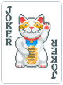
Lucky Cat:
This Joker gains x0.25 Mult every time a Lucky card successfully triggers.
Diet Cola:
Sell this card to create a free Double Tag.
Trading Card:
If first discard of round has only 1 card, destroy it and earn $3.
Flash Card:
This Joker gains +2 Mult per reroll in the shop.
Ramen: x2 Mult, loses x0.01 Mult per card.
Seltzer:
Retrigger all cards played for the next 10 hands.
Castle:
This Joker gains +3 Chips per discarded card of a randomly chosen suit. Suit changes every round.
Mr. Bones:
Prevents Death if chips scored are at least 25% of required chips self destructs.
Acrobat: x3 Mult on final hand of round.
Sock and Buskin:
Retrigger all played face cards.
Troubadour:
+2 hand size, -1 hand each round.
Certificate:
When round begins, add a random playing card with a random Seal to your hand.
Smeared Joker:
Hearts and Diamonds count as the same suit, Spades and Clubs count as the same suit.
Throwback: x0.25 Mult for each Blind skipped this run.
Bull: +2 Chips for each $1 you have.
Rough Gem:
Played cards with Diamond suit earn $1 when scored.
Bloodstone:
1/2 chance for played cards with Heart suit to give x1.5 Mult when scored.
Arrowhead:
Played cards with Spade suit give +50 Chips when scored.
Onyx Agate:
Played cards with Club suit give +7 Mult when scored.
Glass Joker:
This Joker gains x0.75 Mult for every Glass Card that is destroyed.
Showman:
Joker, Tarot, Planet, and Spectral cards may appear multiple times.
Flower Pot: x3 Mult if poker hand contains a Diamond card, Club card, Heart card, and Spade card.
Merry Andy:
+3 discards each round, -1 hand size.
Oops! All 6s:
Doubles all listed probabilities (ex: 1/3 -> 2/3.)
The Idol:
Each played randomly chosen card gives x2 Mult when scored. Card changes every round.
Seeing Double: x2 Mult if played hand has a scoring Club card and a scoring card of any other suit.
Matador:
Earn $8 if played hand triggers the Boss Blind ability.
Satellite:
Earn $1 at end of round per unique Planet card used this run.
Cartomancer:
Create a Tarot card when Blind is selected. (Must have room.)
Astronomer:
All Planet cards and Celestial Packs in the shop are free.
Spare Trousers:
This Joker gains +2 Mult if played hand contains a Two Pair.
Bootstraps: +2 Mult for every $5 you have.
Rare Jokers (20)
DNA:
If first hand of round has only 1 card, add a permanent copy to deck and draw it to hand.
Vagabond:
Create a Tarot card if hand is played with $4 or less.
Baron:
Each King held in hand gives x1.5 Mult.
Obelisk:
This Joker gains x0.2 Mult per consecutive hand played without playing your most played poker hand.
Baseball Card:
Uncommon Jokers each give x1.5 Mult.
Stuntman: +250 Chips, -2 hand size.
Campfire:
This Joker gains x0.25 Mult for each card sold, resets when Boss Blind is defeated.
Invisible Joker:
After 2 rounds, sell this card to Duplicate a random Joker. (Removes Negative from copy.)
Brainstorm:
Copies the ability of leftmost Joker.
Blueprint:
Copies ability of Joker to the right.
Burnt Joker:
Upgrade the level of the first discarded poker hand each round.
Wee Joker:
This Joker gains +8 Chips when each played 2 is scored.
Ancient Joker:
Each played card with randomly chosen gives x1.5 Mult when scored. (Suit changes at end of round.)
Driver's License: x3 Mult if you have at least 16 Enhanced cards in your full deck.
Hit the Road:
This Joker gains x0.5 Mult for every Jack discarded this round.
The Duo: x2 Mult if played hand contains a Pair.
The Trio: x3 Mult if played hand contains a Three of a Kind.
The Family: x4 Mult if played hand contains a Four of a Kind.
The Order: x3 Mult if played hand contains a Straight.
The Tribe: x2 Mult if played hand contains a Flush.
Legendary Jokers (5)
Canio:
This Joker gains x1 Mult when a face card is destroyed.
Perkeo:
Creates a Negative copy of 1 random consumable card in your possession at the end of the shop.
Triboulet:
Played Kings and Queens each give x2 Mult when scored.
Chicot:
Disables effect of every Boss Blind.
Yorick:
This Joker gains x1 Mult Mult every 23 cards discarded.